Lernen und Entwicklung gelten als Schlüssel für Zukunftsfähigkeit – doch was kommt wirklich dabei an? Der L&D Monitor 2026 zeigt: Zwischen strategischem Anspruch und dem, was im Alltag tatsächlich wirkt, klafft nach wie vor eine erhebliche Lücke.
71 % der Organisationen verfügen zwar über eine Lernstrategie, doch nur 21 % verknüpfen sie mit messbaren Unternehmenszielen. 72 % der Organisationen arbeiten im L&D-Bereich überwiegend reaktiv. Die Wahrnehmung von Lernkultur unterscheidet sich um bis zu 28 Prozentpunkte zwischen Führungskräften und Mitarbeitenden. Und lediglich 10 % verfügen über eine klare, aktiv genutzte Skill-Übersicht.
Das sind keine vier isolierten Probleme, sondern eine Wirkungskette, die sich selbst verstärkt. Wo Strategie nicht in Praxis übersetzt wird, bleibt L&D reaktiv. Wo Orientierung fehlt, verpuffen Lernangebote. Und ohne Transparenz über vorhandene und benötigte Skills wird Entwicklung zum Blindflug.
Die Strategie ist vorhanden, verliert aber auf dem Weg in die Umsetzung an Verbindlichkeit. Es fehlt nicht an Konzepten, sondern an Klarheit in der Anwendung.
Die Strategie-Kaskade bricht bei der Übersetzung in messbare Ziele: Von 71 % zu 21 % — ein Verlust von 50 Prozentpunkten auf dem Weg von Konzept zu Praxis.
Stellen Sie sich vor: Sie präsentieren dem Vorstand Ihre 20-seitige Lernstrategie. Viele Wochen Arbeit stecken darin, die Folien sind sauber aufbereitet, die Ziele klar formuliert.
Die Frage des Head of Finance: „Und welches dieser Ziele zahlt auf unser Q2-Umsatzziel ein?"
Es wird still im Raum. Niemand kann die Frage beantworten. Genau hier zeigt sich die Lücke zwischen Strategie und Praxis – und genau dieses Szenario erleben viele L&D-Verantwortliche regelmäßig.
16 % messen den Impact von Lernen überhaupt nicht. Ohne Wirkungsmessung fehlt die Grundlage, um Strategie und Praxis miteinander zu verbinden.
41 % der HR-Verantwortlichen geben an, dass Unternehmensziele nicht klar genug definiert sind oder sich häufig verändern. Für 40 % besteht die zentrale Herausforderung darin, diese Ziele überhaupt in konkrete Lernziele zu übersetzen. Und 16 % messen den Impact von Lernen überhaupt nicht.
Warum ist das so? Weil Lernen in vielen Organisationen noch als Selbstzweck betrieben wird – motiviert durch gesetzliche Anforderungen, intrinsisches Engagement oder das diffuse Gefühl, „irgendetwas tun zu müssen". Was fehlt, ist die Übersetzung in unternehmerische Relevanz: Welches Lernvorhaben zahlt auf welchen strategischen Hebel ein? Welche Kompetenzentwicklung unterstützt konkret Wachstum, Transformation oder Effizienz?
In der Folge entstehen häufig breit angelegte Lernangebote ohne klare Priorisierung. Gleichzeitig wird es nahezu unmöglich zu bestimmen, welchen Beitrag Lernen tatsächlich zur Zielerreichung leistet. Ohne diese Wirkungsmessung fehlt die Grundlage, um Strategie und Praxis miteinander zu verbinden.
Das zentrale Problem ist also nicht das Fehlen einer Strategie – sondern ihre fehlende Übersetzung in die Praxis. Solange nicht klar definiert ist, welche Prioritäten durch Lernen unterstützt werden sollen, bleibt Personalentwicklung in vielen Organisationen unscharf und schwer steuerbar.
Denn wenn Ziele, Prioritäten und gewünschte Ergebnisse nicht klar benannt sind, lassen sich Lernaktivitäten weder gezielt ausrichten noch bewerten. In vier von fünf Organisationen bleibt damit unklar, welchen konkreten Beitrag Lernen zur Zielerreichung leistet. Die Konsequenz: Weiterbildung wird zwar strategisch als wichtig proklamiert, im Tagesgeschäft jedoch regelmäßig zurückgestellt.
Diese fehlende Übersetzung wirkt sich direkt auf den Alltag von L&D aus: Ohne klare strategische Orientierung rücken operative Aufgaben in den Vordergrund. Lernen wird vor allem organisiert und umgesetzt – statt aktiv gesteuert zu werden. L&D-Teams verwalten, anstatt zu gestalten.
Wie sich diese Dynamik konkret im Arbeitsalltag widerspiegelt und warum viele Organisationen trotz strategischer Ambitionen überwiegend reaktiv bleiben, zeigt das folgende Kapitel.
Dass 71 % der Organisationen eine Lernstrategie haben, klingt vielversprechend. Doch was als „Lernstrategie" bezeichnet wird, ist meist ein Maßnahmenplan. Eine echte Lernstrategie beginnt bei der Unternehmensstrategie und arbeitet sich rückwärts vor:
In der Praxis wird diese Übersetzung häufig übersprungen. Zwischen Unternehmensstrategie und Lernangebot klafft eine Lücke.
Mein Rat: Erstens, Maßnahmenplanung nicht mit Strategie verwechseln. Zweitens, eine aktivere Rolle einnehmen – Prioritäten analysieren, Capabilities ableiten, Kausalkette aufzeigen.
Befindet sich Ihre Lernstrategie auf dem Slide-Deck — oder in den täglichen Entscheidungen?
Können Sie in drei Sätzen erklären, wie L&D zu den Top-3-Unternehmenszielen beiträgt?
Wenn die Geschäftsleitung fragt „Was bringt uns L&D?" — haben Sie dann Daten oder ein Gefühl?
72 % der Organisationen arbeiten reaktiv. Nicht, weil es an Ambitionen mangelt, sondern weil die Rahmenbedingungen es kaum anders zulassen. Operative Belastung, fehlende Systeme, manuelle Prozesse.
72 % der Organisationen arbeiten im L&D-Bereich reaktiv oder standardisiert. Nur 6 % beschreiben ihr Lernen als datenbasiert und strategisch gesteuert. 23 % arbeiten überwiegend ad hoc – ohne klare Strukturen oder Steuerung. 49 % setzen auf standardisierte Angebote, die zwar eine gewisse Struktur bieten, aber selten an individuellen oder strategischen Bedarfen ausgerichtet sind.
Das bedeutet: Trotz vorhandener Ambitionen bewegt sich die operative Realität von L&D in den meisten Organisationen am unteren Ende des Reifespektrums.
Die Ambitionen sind klar: 59 % der HR-Verantwortlichen erwarten, dass L&D in den nächsten drei Jahren zum strategischen Partner wird. 61 % sehen eine Zukunft, in der Lernen stärker datenbasiert gesteuert wird. Und 42 % wünschen sich, dass Führungskräfte eine aktivere Rolle in der Entwicklung ihrer Mitarbeitenden übernehmen.
Doch zwischen diesen Erwartungen und der aktuellen Praxis klafft eine erhebliche Lücke. Während die Vision strategisch ist, bleibt der Alltag operativ: L&D-Teams organisieren Schulungen, lösen administrative Probleme und reagieren auf kurzfristige Anfragen — statt Lernen aktiv zu steuern und an Geschäftszielen auszurichten. Die Frage ist nicht, ob der Wandel gewollt ist, sondern ob die Rahmenbedingungen ihn überhaupt zulassen.
L&D arbeitet in 72 % der Organisationen reaktiv — nicht weil die Ambitionen fehlen, sondern weil die Rahmenbedingungen es erfordern.
— Erkenntnis aus dem L&D Monitor 2026Stellen Sie sich einen typischen Montag vor: Um neun Uhr warten drei Meeting-Anfragen von Führungskräften. Ein LMS-Bug muss gelöst werden. Ihr Chef fragt nach etwas Wichtigem — den ROI-Zahlen bis Freitag.
Das strategische L&D-Projekt? Verschoben auf nächste Woche. Schon wieder.
So bleibt L&D reaktiv — nicht aus Wahl, sondern aus Notwendigkeit. Die verfügbaren Ressourcen fließen in die Aufrechterhaltung bestehender Strukturen, anstatt die zugrunde liegende Arbeitsweise zu verändern. Ohne strukturelle Gegenmaßnahmen – wie geschützte Lernzeiten, automatisierte Prozesse und aktive Führungsunterstützung – werden auch die besten Strategien an der Realität des Arbeitsalltags scheitern.
| Kennzahl | Wert | Was das bedeutet |
|---|---|---|
| Steigende L&D-Budgets | 49 % | Mehr Mittel — aber wohin fließen sie? |
| Individuelles Lernbudget | 10 % | Kaum personalisierte Steuerung |
| Budget vollständig genutzt | 14 % | 86 % der Mittel werden nicht ausgeschöpft |
Die verfügbaren Mittel werden somit nicht immer gezielt eingesetzt, sondern fließen in bestehende Strukturen, ohne die zugrunde liegende Arbeitsweise wesentlich zu verändern.
Die Ursachen liegen nicht in fehlendem Engagement, sondern in den Rahmenbedingungen. Viele L&D-Teams sind so stark im operativen Geschäft gebunden, dass für strategische Arbeit schlicht kein Raum bleibt. Administrative Aufgaben, manuelle Prozesse und die Organisation von Schulungen nehmen einen Großteil der verfügbaren Ressourcen ein. Gleichzeitig fehlen vielerorts die Systeme, um Lernen gezielt zu steuern, zu personalisieren oder datenbasiert auszurichten.
Das Paradoxe daran: Viele dieser Herausforderungen wären technisch längst adressierbar. Doch die Mehrheit der Organisationen nutzt die vorhandenen Möglichkeiten nicht. So entsteht ein Teufelskreis: Operative Belastung verhindert strategische Arbeit — und ohne strategische Arbeit bleibt die operative Belastung bestehen.
Die Technologie, um L&D aus dem reaktiven Modus zu befreien, existiert bereits. KI-gestützte Systeme können Zuweisungen und Follow-ups automatisieren, Lernangebote ohne manuellen Aufwand personalisieren, datenbasierte Entscheidungen in Echtzeit ermöglichen und Skill-Gap-Analysen auf Knopfdruck liefern.
Doch die Nutzung hinkt den Möglichkeiten deutlich hinterher: Nur 37 % der Organisationen setzen KI in ihren L&D-Prozessen ein. Lediglich 22 % investieren gezielt Budget in KI-Tools. Die technischen Möglichkeiten sind da — was fehlt, ist der Schritt von der Erkenntnis zur Umsetzung.
Die Kombination aus operativer Belastung, fehlender Steuerung und ungenutztem Technologiepotenzial führt dazu, dass L&D in vielen Organisationen primär verwaltet statt aktiv gestaltet wird. L&D-Teams werden als Kursorganisatoren wahrgenommen — nicht als strategische Partner.
Diese Arbeitsweise hat unmittelbare Folgen für die Wahrnehmung und Nutzung von Lernen im Unternehmen. Wie Führungskräfte, HR und Mitarbeitende Lernkultur völlig unterschiedlich erleben, zeigt das folgende Kapitel.
Nur 37 % nutzen KI in L&D-Prozessen. Lediglich 22 % investieren gezielt Budget in KI-Tools. Die technischen Möglichkeiten sind da — die Nutzung hinkt hinterher.
Wie genau Tools und Künstliche Intelligenz die operative Belastung adressieren könnten, zeigt sich erst, wenn man die Perspektiven vergleicht. 68 % der Führungskräfte glauben, Feedback diene als Grundlage für Entwicklung. Nur 39 % der Mitarbeitenden stimmen zu. Eine Lücke von 28 Prozentpunkten.
Die Einschätzung von Lernen unterscheidet sich je nach Perspektive dramatisch. Die Daten zeigen eine systematische Wahrnehmungslücke, die sich durch alle zentralen Dimensionen der Lernkultur zieht.
| Führungskräfte sagen... | Mitarbeitende erleben... |
|---|---|
| 69 % unterstützen Entwicklung aktiv | 43 % stimmen dem zu |
| 68 % geben systematisches Feedback | 39 % erleben das tatsächlich |
| 70 % sehen klare Rollenanforderungen | 45 % wissen, was erwartet wird |
Die Wahrnehmungslücke zeigt sich besonders deutlich beim Thema Weiterbildungsbudget. Obwohl 86 % der HR-Verantwortlichen und 74 % der Führungskräfte bestätigen, dass ein Budget existiert, geht dieses Wissen auf dem Weg durch die Organisation verloren: 61 % der Mitarbeitenden wissen entweder nicht, ob ihnen ein Budget zur Verfügung steht (31 %), oder geben an, keines zu haben (30 %).
Diese systematische Informationslücke ist mehr als ein Kommunikationsproblem — sie ist ein Symptom für die fehlende Verbindung zwischen L&D-Strategie und Mitarbeitenden. Wenn Ressourcen vorhanden sind, aber nicht ankommen, verpufft jede Investition.
Was Mitarbeitende in der Praxis erleben:
Eine Junior Marketing Managerin öffnet den Schulungskatalog ihres Unternehmens. 250 Kurse stehen zur Auswahl — „Digitale Kompetenzen", „Agiles Arbeiten", „Leadership Basics".
Ihre Frage: „Welcher dieser Kurse bringt mich weiter? Was erwartet mein Chef von mir? Wo stehe ich im Vergleich?"
Auf all das findet sie keine Antwort. Genau so erleben 55 % der Mitarbeitenden das sogenannte „selbstgesteuerte Lernen".
Selbstgesteuertes Lernen braucht Führungskräfte als Wegweiser, nicht nur als Abnicker.
— Erkenntnis aus dem L&D Monitor 202640 % der HR-Verantwortlichen nennen selbstgesteuertes Lernen als Fokus. 56 % sehen es als funktionierend. Doch 70 % der Führungskräfte gehen von klaren Rollenanforderungen aus — nur 45 % der Mitarbeitenden teilen diese Einschätzung.
Selbstgesteuertes Lernen setzt voraus, dass Mitarbeitende wissen, wohin sie sich entwickeln sollen. Fehlt diese Orientierung, entsteht kein echtes Ownership, sondern Unsicherheit und Frustration. Nicht das Fehlen von Angeboten ist das Problem, sondern deren fehlende Struktur, Sichtbarkeit und Einordnung.
Organisationen, die auf Eigenverantwortung beim Lernen setzen, müssen gleichzeitig die Rahmenbedingungen schaffen, die diese Eigenverantwortung erst ermöglichen — allen voran: Klarheit über Ziele, Rollen und Entwicklungsmöglichkeiten.
Wissen Ihre Mitarbeitenden, welche Skills für ihre Rolle und Entwicklung relevant sind?
Haben Führungskräfte die Werkzeuge, um als Entwicklungs-Wegweiser zu agieren?
Wie erleben Ihre Mitarbeitenden „selbstgesteuertes Lernen" — als Freiheit oder als Orientierungslosigkeit?
Die bisherigen Kapitel zeigen ein konsistentes Bild. Genau diese Ausgangslage wird mit Blick auf 2030 zur entscheidenden Herausforderung. Denn ohne Skill-Transparenz wird Entwicklung zum Blindflug.
Skills sind die neue Währung — und sie verlieren an Wert, schneller als je zuvor.
— World Economic Forum, Future of Jobs Report 2025Laut dem Future of Jobs Report des World Economic Forum werden sich bis 2030 rund 39 % der bestehenden Skills verändern. Viele Fähigkeiten verlieren bereits nach drei bis vier Jahren an Aktualität. Für Organisationen bedeutet das: Sie müssen ihre Kompetenzen nicht nur kontinuierlich weiterentwickeln, sondern auch wissen, wo sie stehen und wohin sie sich bewegen müssen.
Doch genau hier zeigt sich eine zentrale Schwachstelle: Nur 10 % der Organisationen verfügen über eine klare, aktiv genutzte Übersicht ihrer vorhandenen Skills und Skill-Gaps. Weitere 37 % haben zwar einen Überblick, nutzen diesen jedoch nicht konsequent. Damit fehlt in der großen Mehrheit der Organisationen die Grundlage, um Entwicklung gezielt zu steuern — und um auf die Anforderungen von morgen vorbereitet zu sein.
Ohne Skill-Transparenz (10 %) beschleunigt Technologie das bestehende Muster — nicht die gewünschte Transformation. Die Herausforderung: Voraussetzungen schaffen, um Entwicklung gezielt steuern zu können.
Statt Lernmaßnahmen zu organisieren und Schulungskataloge zu verwalten, rückt die gezielte Entwicklung von Skills in den Mittelpunkt. Das erfordert eine neue Arbeitsweise: datenbasierte Entscheidungsfindung, enge Verzahnung mit der Unternehmensführung und eine aktive Rolle bei organisatorischen Veränderungsprozessen.
Technologie kann diesen Wandel beschleunigen: Skills systematisch erfassen, Entwicklungen sichtbar machen, Lernangebote stärker an individuellen Bedarfen ausrichten und den Impact von Maßnahmen messbar machen. KI-gestützte Systeme ermöglichen Personalisierung ohne manuellen Aufwand und schaffen die Grundlage für datenbasierte Personalentwicklung.
Doch Technologie allein ist kein Gamechanger. Sie entfaltet nur dann Wirkung, wenn die Grundlagen stimmen: Skill-Transparenz (aktuell nur 10 %), strategische Steuerung (21 %) und systematische Impact-Messung (15 %). Ohne diese Basis beschleunigt Technologie nicht die gewünschte Transformation — sondern das bestehende Muster. Wer digitalisiert, ohne die strategischen Voraussetzungen zu schaffen, automatisiert lediglich den Status quo.
Wissen Sie, welche Skills Ihre Organisation in 3 Jahren braucht?
Haben Sie Sichtbarkeit darüber, welche Skills heute vorhanden sind?
Beschleunigt Ihre Technologie die Strategie — oder das bestehende Muster?
Organisationen, die es schaffen, diese Glieder miteinander zu verbinden, entwickeln nicht nur einzelne Maßnahmen weiter — sie schaffen die Voraussetzung für eine Personalentwicklung, die tatsächlich zum Unternehmenserfolg beiträgt. Die Frage ist nicht, ob Sie in Lernen investieren sollten — sondern wie Sie den Sprung von ambitionierten Plänen zu messbarer Wirkung schaffen.
Ohne Skill-Transparenz können Sie nicht auf Marktveränderungen reagieren. Sie investieren in Lernen, ohne zu wissen, ob es die richtigen Fähigkeiten aufbaut.
Ohne strategische Orientierung bleibt Ihr Team im operativen Hamsterrad. Sie werden als Kursorganisator wahrgenommen, nicht als Business Partner.
Ohne Klarheit über relevante Skills investieren sie Zeit in Lernen, das nicht weiterbringt. Frustration wächst, Engagement sinkt.
Studytube L&D Monitor 2026 — Die vollständige Studie mit allen Daten, Analysen und Handlungsempfehlungen.
Der L&D Monitor 2026 untersucht den Stand von Lernen und Entwicklung in deutschen Organisationen. Die Online-Befragung wurde im Januar und Februar 2026 über das Bilendi-Panel durchgeführt.
Durch die Befragung von drei Zielgruppen — HR-Verantwortliche, Führungskräfte und Mitarbeitende — entsteht ein differenziertes Bild: Nicht nur was Organisationen planen, sondern was davon im Alltag wirklich ankommt.
Alle Statistiken in diesem Bericht stammen aus dieser Erhebung, sofern nicht anders angegeben.
Der Studytube Learning & Development Monitor 2026 ist eine umfassende quantitative L&D-Studie in Deutschland und den Niederlanden, durchgeführt über das Online-Panel Bilendi. Damit untersucht Studytube jährlich den Stand der Lern- und Entwicklungskultur in deutschen und niederländischen Unternehmen.
Der deutsche Studienumfang umfasste in diesem Jahr 1.686 Befragte, davon 483 HR-Verantwortliche (mitverantwortlich oder entscheidungsbefugt für HR-Maßnahmen), 312 Führungskräfte und 891 Mitarbeitende. Die Befragten haben den Fragebogen in eigener Zeit und eigenem Tempo online ausgefüllt. Die Ergebnisse wurden im Januar und Februar 2026 erhoben.
Ausgangslage: L&D bestand aus einem Schulungskatalog mit 200+ Kursen und einer jährlichen Bedarfserhebung per Excel. Führungskräfte genehmigten Trainings, waren aber nicht in die Entwicklungsplanung eingebunden. Mitarbeitende wussten nicht, welche Skills für ihre Karriere relevant waren.
"Wir haben nicht mehr Geld ausgegeben. Wir haben dasselbe Geld gezielter eingesetzt."
— Head of People DevelopmentFinden Sie heraus, wo Ihre Organisation steht: Der L&D Impact Scan zeigt Ihnen in 10 Minuten Ihre Top-3-Hebel. Kostenlos unter scan.studytube.com/de
